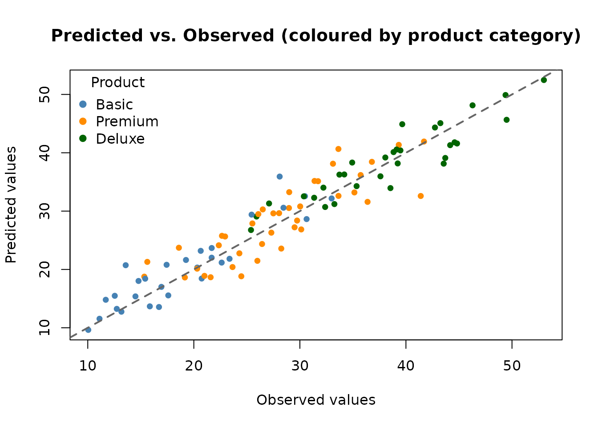

Using Categorical Covariates with AddiVortes
John Paul Gosling and Adam Stone
2026-04-01
Source:vignettes/categorical.Rmd
categorical.RmdThis vignette explains how AddiVortes handles
categorical covariates — variables that take a discrete
set of named levels, such as region, product type, or treatment group.
Because Voronoi tessellations require numerical distances between
points, categorical variables must first be converted to numbers.
AddiVortes does this automatically using one-hot
encoding, and this vignette explains the encoding in
detail.
1. What is One-Hot Encoding?
A categorical variable with d distinct levels cannot be treated as a number because there is no natural ordering or magnitude between categories. For example, assigning “North” = 1, “South” = 2, “East” = 3, “West” = 4 would incorrectly imply that “West” is four times “North”.
One-hot encoding converts a categorical variable with d levels into d − 1 binary (0/1) indicator columns. One level is chosen as the reference level (by convention, the first level in alphabetical order), and the remaining d − 1 levels each receive their own column:
| Level | region_North |
region_South |
region_West |
|---|---|---|---|
| East | 0 | 0 | 0 |
| North | 1 | 0 | 0 |
| South | 0 | 1 | 0 |
| West | 0 | 0 | 1 |
The reference level (“East” here, as the alphabetically first) is represented by all zeros. Using d − 1 rather than d columns avoids perfect collinearity while retaining full information about group membership.
AddiVortes applies this encoding automatically to any
column in x that is of type character or
factor. You do not need to pre-process your data.
2. The catScaling Parameter
After one-hot encoding, each indicator column takes values 0 or 1,
while continuous covariates are normalised to the range [−0.5, 0.5]. If
catScaling = 1 (the default), the binary jump from 0 to 1
has a magnitude comparable to the full range of a normalised continuous
covariate, giving categorical and continuous covariates roughly equal
influence on the Voronoi tessellation distances.
You can adjust this with the catScaling argument:
-
catScaling > 1: gives categorical differences more weight than continuous differences. -
catScaling < 1: gives categorical differences less weight, making the model rely more heavily on continuous covariates.
The column name for each binary indicator follows the pattern
<original_column>_<level>. For example, a
column region with levels "East",
"North", "South", "West" produces
columns region_North, region_South,
region_West (with "East" as reference).
3. A Synthetic Example
We create a dataset of 400 observations with two continuous covariates and two categorical covariates. The response variable depends on all four:
library(AddiVortes)
set.seed(123)
n <- 400
x <- data.frame(
age = rnorm(n, mean = 40, sd = 10),
income = runif(n, 20, 120), # income in thousands
region = sample(c("East", "North", "South", "West"), n, replace = TRUE),
product = sample(c("Basic", "Premium", "Deluxe"), n, replace = TRUE),
stringsAsFactors = FALSE
)
# True response: depends on continuous and categorical variables
region_effect <- ifelse(x$region == "North", 5,
ifelse(x$region == "South", -5, 0)
)
product_effect <- ifelse(x$product == "Premium", 10,
ifelse(x$product == "Deluxe", 20, 0)
)
y <- 0.3 * x$age +
0.1 * x$income +
region_effect +
product_effect +
rnorm(n, sd = 3)Note that region has 4 levels and product
has 3 levels. When passed to AddiVortes as character
columns, they will be encoded as 3 and 2 binary columns respectively —
for a total of 5 extra columns alongside the 2 continuous
covariates.
4. Inspecting the Encoding
We can call the internal encoding function directly to see exactly what the encoded matrix looks like before fitting the model.
# Show the first few rows of x before encoding
head(x, 5)
#> age income region product
#> 1 34.39524 67.06818 East Premium
#> 2 37.69823 56.58455 West Basic
#> 3 55.58708 32.12721 North Premium
#> 4 40.70508 24.69937 East Premium
#> 5 41.29288 46.27963 East Basic
# Manually inspect the encoding applied by AddiVortes
enc_result <- AddiVortes:::encodeCategories_internal(x, catScaling = 1)
head(enc_result$encoded, 5)
#> age income region_North region_South region_West product_Deluxe
#> [1,] 34.39524 67.06818 0 0 0 0
#> [2,] 37.69823 56.58455 0 0 1 0
#> [3,] 55.58708 32.12721 1 0 0 0
#> [4,] 40.70508 24.69937 0 0 0 0
#> [5,] 41.29288 46.27963 0 0 0 0
#> product_Premium
#> [1,] 1
#> [2,] 0
#> [3,] 1
#> [4,] 1
#> [5,] 0The columns produced are: - age and income
(unchanged continuous columns) - region_North,
region_South, region_West (3 indicators;
“East” is the reference) - product_Deluxe,
product_Premium (2 indicators; “Basic” is the
reference)
All binary columns take values 0 or catScaling (here 1).
When catScaling = 1 all indicator columns and the
continuous columns span a comparable range inside the model.
5. Fitting the Model
Fitting the model is identical to the standard workflow — simply pass
the data frame with character or factor columns directly.
AddiVortes handles the encoding internally.
# Split into training and test sets
set.seed(42)
train_idx <- sample(n, 300)
x_train <- x[train_idx, ]
y_train <- y[train_idx]
x_test <- x[-train_idx, ]
y_test <- y[-train_idx]
fit <- AddiVortes(
y = y_train,
x = x_train,
m = 50,
totalMCMCIter = 500,
mcmcBurnIn = 100,
catScaling = 1, # default: binary columns span [0, 1]
showProgress = FALSE
)
cat("In-sample RMSE:", round(fit$inSampleRmse, 3), "\n")
#> In-sample RMSE: 2.393
# The catEncoding field records how the encoding was built
cat("\nReference levels used:\n")
#>
#> Reference levels used:
for (j in fit$catEncoding$catColIndices) {
orig_col <- fit$catEncoding$origColNames[j]
ref_lev <- fit$catEncoding$colEncodings[[j]]$levels[1]
all_lev <- fit$catEncoding$colEncodings[[j]]$levels
cat(
" ", orig_col, ": reference =", ref_lev,
"| all levels:", paste(all_lev, collapse = ", "), "\n"
)
}
#> region : reference = East | all levels: East, North, South, West
#> product : reference = Basic | all levels: Basic, Deluxe, PremiumThe encoding metadata is stored in fit$catEncoding and
is automatically used when making predictions, so new data passed to
predict() is encoded with exactly the same reference
levels.
6. Making Predictions
Predictions on new data work in the usual way. If the new data contains the same categorical levels as the training data, the encoding is applied consistently.
preds <- predict(fit, x_test, showProgress = FALSE)
rmse_test <- sqrt(mean((y_test - preds)^2))
cat("Test RMSE:", round(rmse_test, 3), "\n")
#> Test RMSE: 2.883
# Colour observations by product category
prod_cols <- c("Basic" = "steelblue", "Premium" = "darkorange", "Deluxe" = "darkgreen")
point_cols <- prod_cols[x_test$product]
plot(y_test, preds,
col = point_cols, pch = 19, cex = 0.8,
xlab = "Observed values",
ylab = "Predicted values",
main = "Predicted vs. Observed (coloured by product category)"
)
abline(0, 1, lwd = 2, lty = 2, col = "grey40")
legend("topleft",
legend = names(prod_cols),
col = prod_cols,
pch = 19, title = "Product", bty = "n"
)
7. Handling Unseen Category Levels
At prediction time, if a new observation contains a category level
that was not seen during training, AddiVortes treats it as
the reference level (all binary indicators set to
zero). This is a sensible default: the model cannot infer anything about
a previously unseen level and falls back to the baseline.
# Create a test point with an unseen product level "Luxury"
x_new <- data.frame(
age = 45,
income = 80,
region = "North",
product = "Luxury", # unseen level
stringsAsFactors = FALSE
)
pred_new <- predict(fit, x_new, showProgress = FALSE)8. Effect of catScaling
The catScaling parameter controls how much influence
categorical differences have in the distance calculations. Here we fit
two models — one with catScaling = 1 (equal weight) and one
with catScaling = 2 (double weight for categorical
differences) — and compare their test RMSEs.
fit_cs2 <- AddiVortes(
y = y_train,
x = x_train,
m = 50,
totalMCMCIter = 500,
mcmcBurnIn = 100,
catScaling = 2, # give categorical differences twice as much weight
showProgress = FALSE
)
preds_cs2 <- predict(fit_cs2, x_test, showProgress = FALSE)
cat("Test RMSE (catScaling = 1):", round(rmse_test, 3), "\n")
#> Test RMSE (catScaling = 1): 2.883
cat("Test RMSE (catScaling = 2):", round(sqrt(mean((y_test - preds_cs2)^2)), 3), "\n")
#> Test RMSE (catScaling = 2): 2.935In this example, the true response has substantial category effects
(up to ±20 units for product type) relative to the continuous effects,
so increasing catScaling may help the model focus more on
categorical group membership.
9. Summary of Key Points
- Pass
characterorfactorcolumns directly in the covariate data frame;AddiVortesencodes them automatically. - One-hot encoding: a categorical variable with d levels is converted to d − 1 binary (0/1) indicator columns.
- The reference level is the alphabetically first level; all its indicators are zero.
- Indicator columns are named
<original_column>_<level>(e.g.product_Premium). -
catScaling(default 1) controls the weight given to categorical differences relative to continuous differences. Increase it to give categories more influence; decrease it to give them less. - The encoding metadata is stored in
fit$catEncodingand applied automatically to new data inpredict(). - Unseen category levels at prediction time are treated as the reference level.